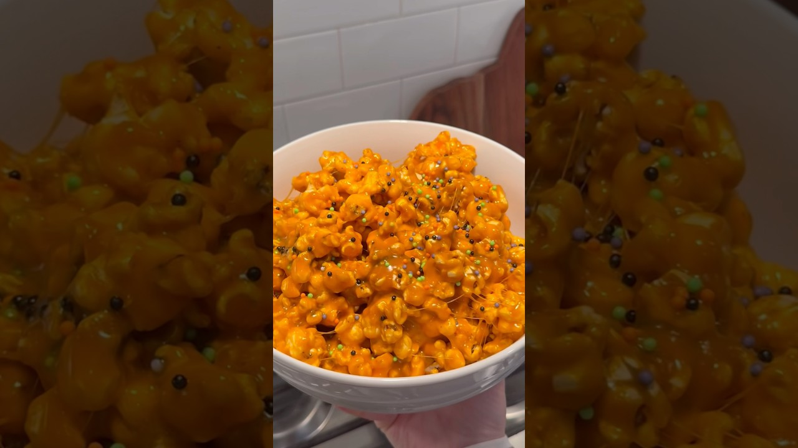

Rice-crispy-treat logic applied to popcorn, from Kate_cleanhome's fall ASMR short. Candy corn marshmallows do all the work — orange color, fall flavor, one pot, no candy thermometer.
Pop the popcorn and pick out every unpopped kernel. Once the marshmallow goes on, you can't find them until your molars do.
In a big pot over low heat, melt the butter, then add the marshmallows and stir until you have a smooth, orange, lava-adjacent goo. Stir in the pumpkin pie spice and salt.
Off the heat, pour in the popcorn and fold until every piece is coated. A buttered spatula keeps the mess on the popcorn's side.
Sprinkles over the top while it's still sticky. Tip into a serving bowl and eat warm and stretchy, or spread on parchment 10 minutes if you prefer clusters to a communal pull-apart.